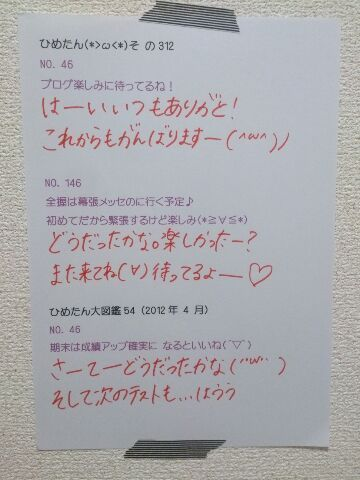

| 2013/10 06 Sun | ひめたん(*>ω<*)そ の351 |

いよいよ明日は代々木ライブ！
今まで経験したことないおっきなステージ、
真夏の全国ツアーの集大成......
ううーなんか緊張するよー
あっ東京はお天気がよくないかもしれないので
遠征組さんは気をつけてお越しくださいねー
いや関東組も気をつけてお越しくださいねー
ひめたんは晴れオンナよ！なぜ雨ふるのだ！
現地でのリハをして
距離感とかだいぶ掴んできた(｀・ω・´)」
サイズが今までと全然違うので
今日はただただ広さに圧倒されてた感じす
でもちゃーんとみなさんのこと見つけるからねー
そうそう！
質問でたくさんあったので
ちらっとまとめました＼(^O^)／
◎サイリウム→ピンクがすき
◎ひめたん単推し、イチ推しの方は
よかったらひめたんTシャツ着てみてねー
◎物販Tシャツもあるよー
とにかく動きやすさ重視の服装でねっ
◎うちわ、ひめたんタオルもよかったら......
◎代々木では上手・下手関係なく全方向行きます！
客席ももちろん広いと思うけど
そのなかでひめきゅんさんいっぱい見つけたいので
よかったらご協力くださーい∩^ω^∩
みんなで楽しいライブにしよーねっ
公式サイトに
今回のグッズとかも紹介されてたので
よかったらチェックしてみてくださいねー♪
乃木ここに
代々木ライブ直前！的な動画も上がってるので
ぜひチェックしてくださいねー♪
さらに真夏の全国ツアーではしなかった
また新しいことも......
楽しみになってきた？( ^ω^ )にや
質問返しどばばばーんっ

 ひめたんの好きな男の子の仕草って何？
ひめたんの好きな男の子の仕草って何？
なんだろうねー
何かに一生懸命な人はかっこいーと思う///
 ひめたんは牛丼派？豚丼派？
ひめたんは牛丼派？豚丼派？
それともいくたどん派？笑
うん迷わず親子丼派かな( ^ω^ )
.........いくたどん？そうだなーどうだろうなー( ^ω^ )
 こっちで広島風の
こっちで広島風の
美味しいお好み焼き屋見つけた？
おうちで作ってしまうので
お好み焼きを食べに出かけることがないのよー
オタフクソースこっちじゃ見ないからな......
中二の男の子なんですけど
今日からひめたんのお友達になっても良いかな？
おともだちかもーんぬ！
仲良くしてねよろしくね☆
わたしがかなーーーり前にプレゼントした
りぼんちゃん達はまだ捨てられてませんか！？(笑)
ままは、みなさんからのプレゼントを
捨てるようなことはないから安心してー(*^ω^*)笑
大事につかってるよーありがとーう♪
広島に行ったときは、いつも
「むすび むさし」の「銀むすび」を食べます。
ひめたんは食べたことある？
うは！うはうはー懐かしいー！
むさしさんのお弁当本当に大好きで
うはああー懐かしいーっ
前にお仕事で帰ったときのお弁当も
むさしさんのお弁当だったんだけどね
メンバーさんも大絶賛だったんだよー＼(^O^)／
密かに応援してます(笑)
堂々と応援した方が良かった？
密かに応援してくださってるのも
もちろん嬉しいよ(*^ω^*)
堂々と応援してくださっても嬉しいので
気が向いたら......♪
 乃木坂の曲で
乃木坂の曲で
ダンスが難しい曲ってなんですか？
なんだろなー
制服のマネキン、ガールズルールとか
あの辺かなーと思う。
難しい曲は踊ってて楽しい(^O^)
ひめたんは、岐阜県に来たことありますか？
ないです......
岐阜いってみたい！ねねころ！
秋は中学の頃に合宿コンクールが
あったなーっ思う季節
ひめたんは何唄った？笑
今年は、ロードオブメジャーさんの
「心絵」をうたいました。いい曲(〃ω〃)
ひめたんはちくわとちくわぶどっちが好きー？
それが、ちくわぶと聞いてピンとこないのよ。
ちくわは好きってゆーかなんてゆーか
嫌いじゃないですよー
え？1stのPV？台っ本っ♪♪
 髪がショートな子は、
髪がショートな子は、
どうやってアレンジしたらいいと思う？
りぼんは便利だよ◎
ひめたんはショートにしたことがないから
あんまし詳しくはないんだけど
生駒ちゃん(生駒里奈ちゃん)や
れなりん(市來玲奈ちゃん)の外ハネとか
かわいいと思う！
ひめたんは
学校の行事で何が一番好きだったー？？
体育大会は好きだったなあー♪
あの、運動はできないのよ。できないんだけどね
個人の徒競走がない学校だったので
苦い思い出があんましないです
放送部さん実況とかもやってたんだよーう！
 ひめたんがかわいくてかわいくて
ひめたんがかわいくてかわいくて
かわいすぎて夜しか眠れないんですが！
どうしたらひめたんみたいに女の子らしく
かわいくなれますか
いいことだ！とってもいいこと！
ひめたんも夜しか寝られないカラダに
なりたくてたまらんのだよ(´・ω・｀)
あ、ひめたんはかわいくないだよ←
でも嬉しいよーありがとうねー///
それでは明日いくよーて方は
代々木第一体育館でお会いしましょう！
お留守番ちーむはレポ待っててください！

(＊´・ω・＊)
コメント(440)
2013/10/06 00:30